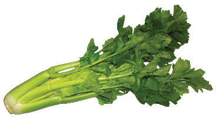
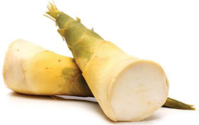
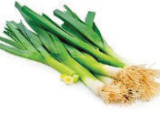
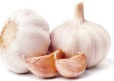
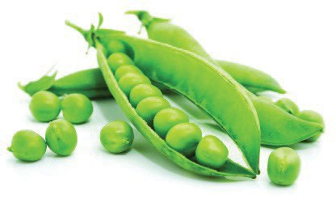
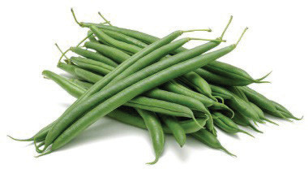

Stem vegetables: These are edible plant stems. These vegetables include celery, asparagus and bamboo shoots. Figure 4.13 illustrates stem vegetables.


Figure 4.13: Stem vegetables
Bulb vegetables: Bulb vegetables usually grow just below the surface of the ground and produce leafy shoots above the ground. They usually consist of layers or clustered segments. These aromatic vegetables usually serve as food flavours, particularly in soups. These vegetables include garlic, leeks, shallot and onions. Figure 4.14 exemplifies bulb vegetables.


Figure 4.14: Bulb vegetables
Seed vegetables: These vegetables are usually legumes such as green peas and French beans. Figure 4.15 shows examples of seed vegetables.


Figure 4.15: Seed vegetables